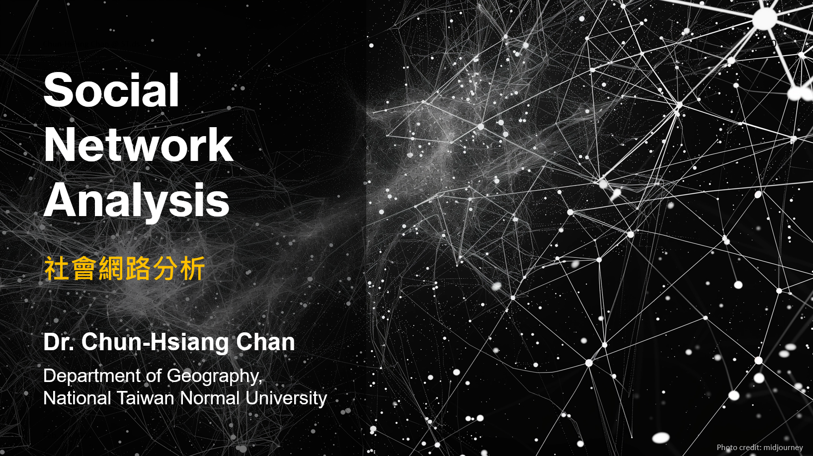

Social Network Analysis @ NTNU
Course Content
Social network analysis is one of the major data analysis approaches to characterize the relational dataset from social science to biology, even cybersecurity. We cover the fundamental knowledge of social network analysis (e.g., data collection, network construction, network indicator calculation, community detection, and network regression) and demonstrate various applications based on PBL-oriented design in several academic or practical fields to optimize the learning curve. To better the applicability and practicability of social network analysis, we have a midterm pitch and a final project presentation to enhance students’ motivation and sharpen their programming skills. The first two hours are lecture-oriented teaching, and the last hour is Lab practice or mini-PBL.
Course Intro.
 01 :: Course IntroductionContents: (1) Lecturer introduction (2) What is the social network? (3) Why do you need to take this course? (4) What will you learn from this course? (5) Syllabus (6) Grading policy
Intro. to SNA
02 :: Introduction to Social Network AnalysisContents: (1) The Introduction to Complex Network (2) The Social Network Perspective (3) Historical and Theoretical Foundations (4) The Formulation of Network (5) Special Network Case (6) Network Examples (7) Level of Analysis (8) Paper Reading (9) References
Data Collection & Network Formulation
03 :: Data Collection & Network FormulationContent: (1) Network Data (2) Boundary Specification and Sampling (3) Types of Networks (4) Network Data Collection (5) Network Formulation (6) Network in Matrix (7) Network Characteristics (8) Paper Reading (9) References
Ego Network
04 :: Ego NetworkContent: (1) Network Category (2) Ego Network (3) Ego Network Characteristics (4) Strong Tie and Weak Tie (5) Quantify Ego-network Structure (6) E-I Index for the Ego: Ego-level Homophily (7) Brokerage (8) Structure Hole (9) Paper Reading (10) References
Centrality
05 :: CentralityContent: (1) Centrality (2) Degree Centrality (3) Closeness Centrality (4) Betweenness Centrality (5) Information Centrality (6) Eigenvector Centrality (7) HITS algorithm (8) PageRank (9) Paper Reading (10) References
Network Visualization
06 :: Network VisualizationContent: (1) Task 1: Compute Centrality (2) Task 2: Visualize with Networkx (3) Task 3: Visualize with pyViz (4) Task 4: Visualize with GeoPandas
Group
07 :: GroupContent: (1) Group Concept (2) Cohesion (3) Component (4) Clique (5) k-plex (6) k-core (7) Modularity (8) Louvain’s Method (9) Girvan-Newman Method (10) Infomap (11) k-core Decomposition (12) Paper Reading (13) References
Position
08 :: PositionContent: (1) Positional and Role Analyses (2) Position (social position) (3) Role (social role) (4) Position Analysis (5) Types of Equivalence (6) Structural Equivalence (7) CONCOR (8) Block Modeling (9) Position and Social Context (10) Paper Reading (11) References
Two-mode Network
09 :: Two-mode NetworkContent: (1) Network-level Measures (2) Network Density (3) Dyad (4) Triad (5) Transitivity (6) Clustering (7) Clustering Coefficient (8) Centralization (9) Core-peripheral Structure (10) Two-mode Network (11) Paper Reading (12) References
Network Autocorrelation
10 :: Network AutocorrelationContent: (1) Network Autocorrelation Model (2) Recall: Regression Basics (3) Modeling Social Influence (4) Theories on Social Influence (5) Communication vs Comparison (6) Adjacent vs Non-adjacent (7) Operationalization of Weighting Matrix (8) Summary (9) R installation
Quadratic Assignment Procedure
11 :: Quadratic Assignment ProcedureContent: (1) QAP Introduction (2) Issue: QAP as a Graph Regression (3) Residuals of OLS (4) Weighting matrix (GeoDa) (5) Regression in a Graph (6) Statistical Problems (7) Handling Non-independent Observations (8) Sample Matrix Permutation (9) Procedure of QAP (10) QAP Regression (11) R Code :: QAP Regression